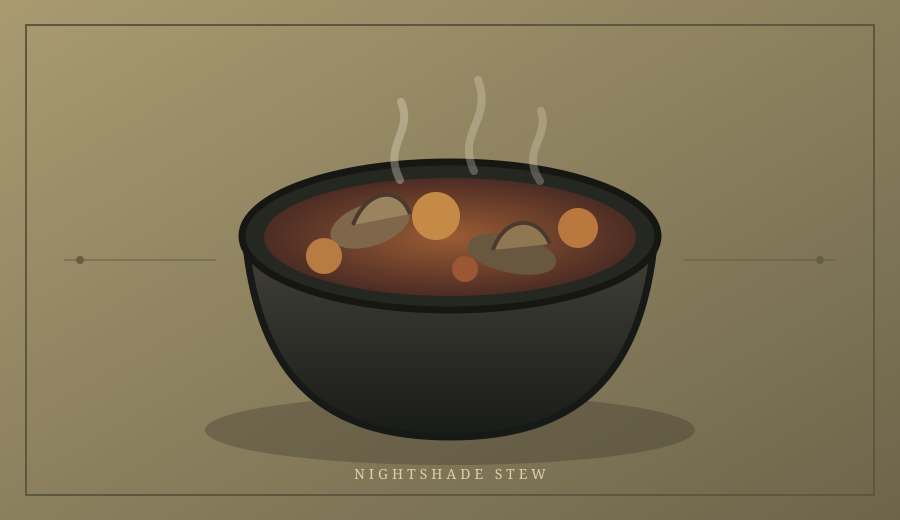
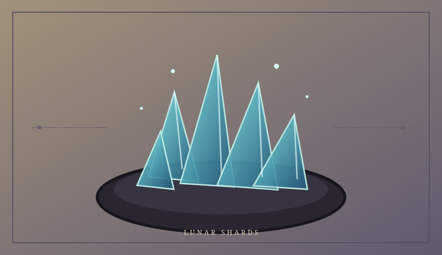

Return To Apothecary
About The Witch
Kitchen Utilities
FRZ's Apothecary
Potion Brewing Guide
Three recipes from the FRZ Apothecary collection
Apothecary Recipe NO. 01
Essence of Twilight
A layered blackberry and lavender cordial for quiet evenings
Blackberry • Lavender • Lemon
Ingredients
Midnight Brambleberries
Fresh Blackberries
1 cup
Dried Sprite Blossoms
Culinary Lavender
1 tbsp
Acidic Solar Extract
Fresh Lemon Juice
1/2 cup
Dissolved Moonlight
Lavender Syrup
2 tbsp
Crystal Wellwater
Sparkling Water
1 cup
– 01A –
Method Of Preparation
Brewing Ritual
Follow each step in order and measure every component with care
01
Prepare The Brambleberries
Press the blackberries gently with a wooden spoon until their dark juices are released
02
Steep The Sprite Blossoms
Cover the lavender with a quarter cup of hot water. Steep for three minutes, then strain
03
Combine The Essences
Stir the blackberry juice, lavender infusion, lemon juice, and syrup together
04
Form The Twilight Layers
Fill a clear bottle with ice. Add the berry mixture, then slowly pour in the sparkling water
05
Complete The Potion
Garnish with whole blackberries and a small sprig of lavender. Serve at once
Brewer's Note
Chill every liquid before assembling the potion to keep the twilight layers distinct
– 01B –
Apothecary Recipe NO. 02
Nightshade Stew
A dark and hearty mushroom stew gathered from the roots of the old forest

Wild Mushroom • Potato • Smoked Paprika
Ingredients
Troll's Toes
Baby potatoes, halved
1 lb
Whispering Fungal Caps
Wild Mushrooms
10 oz
Ground Fire-Ant Dust
Smoked Paprika
2 tsp
Dragonbone broth
Vegetable Stock
3 cups
Mandrake Rounds
Carrots, sliced
2 Count
– 02A –
Method Of Preparation
Brewing Ritual
Follow each step in order and measure every component with care
01
Wake the iron
Warm a large pot over medium heat. Add a spoonful of oil and cook the onion until soft
02
Brown the forest harvest
Add the mushrooms and cook until their edges are brown and their liquid has evaporated
03
Add the roots
Stir in the potatoes, carrots, and smoked paprika until everything is evenly coated
04
Fill the cauldron
Pour in the vegetable stock. Bring to a gentle boil, then lower the heat
05
Finish the stew
Simmer uncovered for thirty minutes, or until the vegetables are tender and the broth is rich
Brewer's Note
For a thicker brew, crush two softened potato pieces against the side of the pot before serving
– 02B –
Apothecary Recipe NO. 03
Lunar Shards: Azure
Glass-bright raspberry sweets chipped from the edge of a blue moon

Raspberry • Sugar • Blue Moonlight
Ingredients
Crushed Moonstone
Granulated sugar
2 cups
Stardust Binder
Cream of tartar
1/4 tsp
Liquefied Abyssal Aura
Blue food coloring
3 drops
Siren Essence
Raspberry extract
1 tsp
Cloudwater
Filtered Water
3/4 cup
– 03A –
Method Of Preparation
Brewing Ritual
Follow each step in order and measure every component with care
01
Prepare the tablet
Line a shallow baking tray with parchment paper and place it on a heat-safe surface
02
Dissolve the moonstone
Combine the sugar, water, and cream of tartar in a saucepan over medium heat
03
Heat the mixture
Cook without stirring until the syrup reaches 300°F, the hard-crack stage
04
Capture the abyss
Remove from the heat and carefully stir in the blue coloring and raspberry extract
05
Shatter the spell
Pour onto the prepared tray. Cool completely, then break into irregular glass-like pieces
Brewer's Note
Hot sugar can cause serious burns. Use a thermometer and keep hands clear while pouring
– 03B –